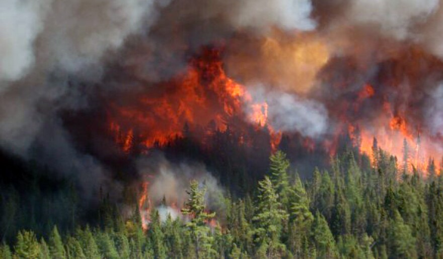
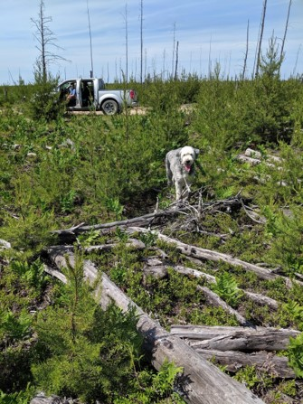
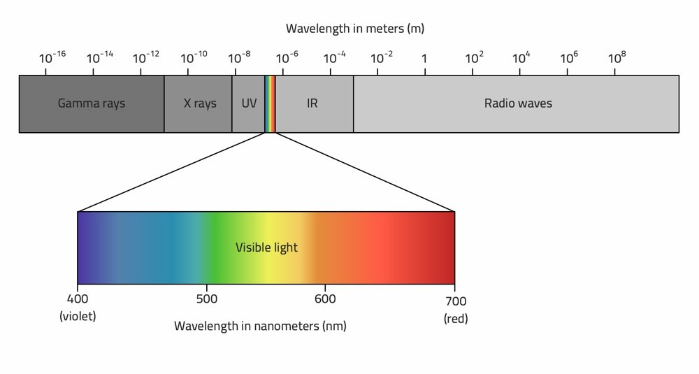
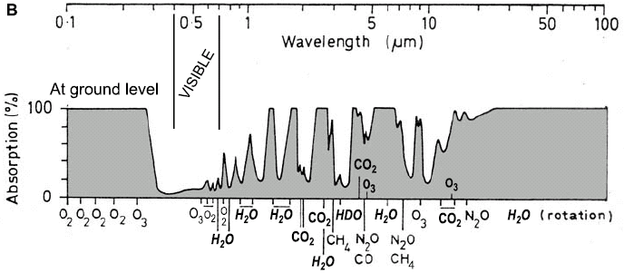
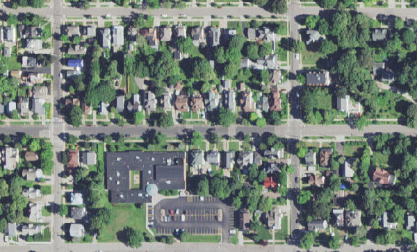
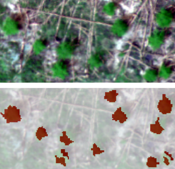

INTRODUCTION
Geography
Geography is the study of processes and patterns on the earth's surface:
- Physical
- Human
- Human-Environment Interaction
Fire Impacts
 
How does fire severity and environmental characteristics influence recovery?
- Soil moisture and composition
- terrain characteristics
- management activities

Remote Sensing
Remote Sensing is the measurement of an object from some distance.
The term in situ is direct measurement.


Remote Sensing Data Model
Electromagnetic Radiation (EMR)
- Understanding how EMR interacts with the feature you are interested in is the basis for interpreting remotely sensed data
- Any material with molecular motion emits radiant energy
- The amount of EMR is the sum of reflected, transmitted, and absorbed EMR
Electromagnetic Specturm
EMR Pathways
- Reflection - redirection due to interaction with an opaque surface.
- Absorption - the transfer of the energy of a wave to matter as the wave passes through it.
- Transmission - interaction with a transparent surface without much attenuation
EMR Scattering
Scattering causes additive path radiance.
- Rayleigh - i.ie blue sky
- Mie - i.e. dust
- Non-selective - i.e. clouds
Absorption
Absorption causes reductive path radiance

image source: intechopen.com/chapters/46880
Some definitions
- Irradiance is the amount of light incoming to a certain point from possibly all directions.
- Radiance can be thought of as how much light the instrument sees from the object being observed.
- Reflectance the ratio of radiance to irradiance in a specific wavelength
Reflectance Signatures
Different materials reflect EMR differently, this is the basis of remote sensing.

Resolution
- Spatial- measure of coarseness of an image, it's ability to resolve fine details.
- Spectral- ability of a sensor to detect small differences in wavelength.
- Temporal- the time period between repetitive coverage by a sensor.
- Radiometric- measure of a sensor's ability to discriminate small differences in the magnitude of radiation.
Comparsion Landsat and GeoEye
| Characteristic | Landsat 8 | GeoEye |
|---|---|---|
| Spatial | 30m* | # |
| Spectral | 11 bands 0.43-12.51 µ m | ## |
| Radiometric | 12-bit scaled to 16-bit | ## |
| Temporal | 16 days | ## |
Creating Knowledge
Human Interpretation

Pixel-Based Analysis

- Pixel by pixel comparison to class generalization
- Does not use geographic context
- Limited to the use of spectral characteristics for classification
- Does not require the use of segmentation
- Because we don't identify objects, there is a gap between image data and human knowledge models